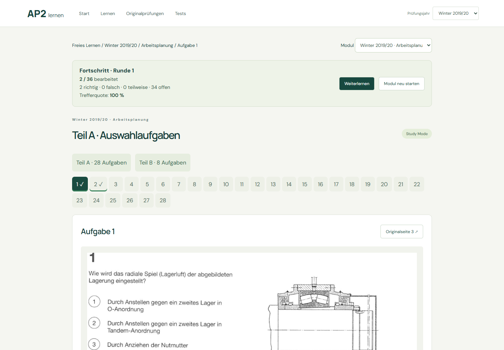
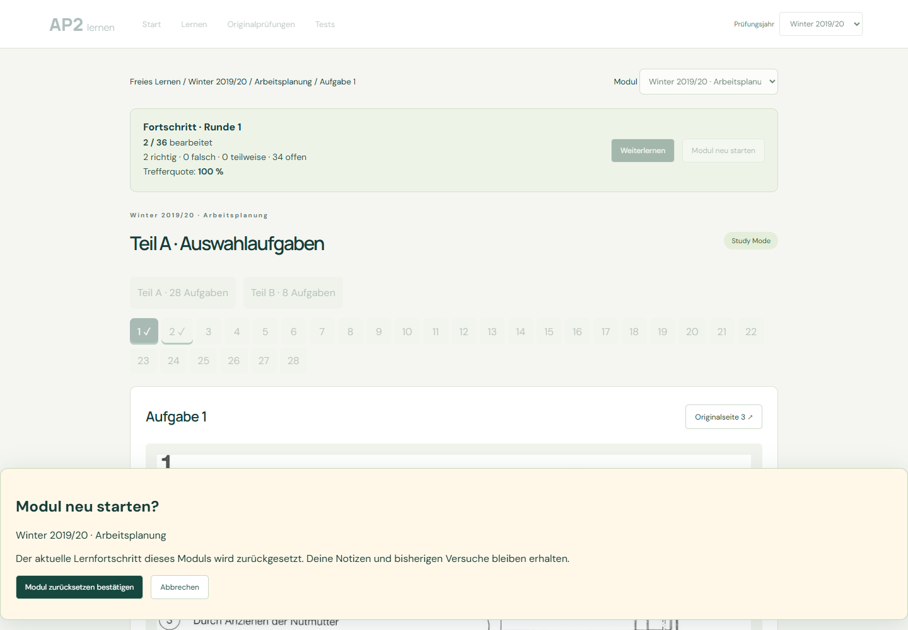
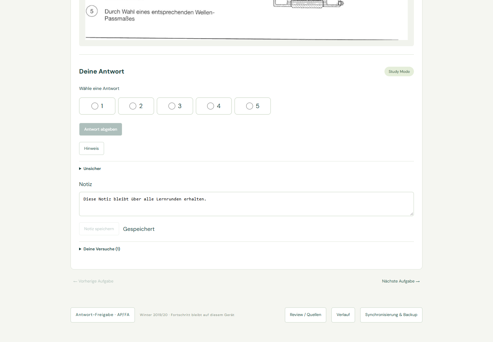
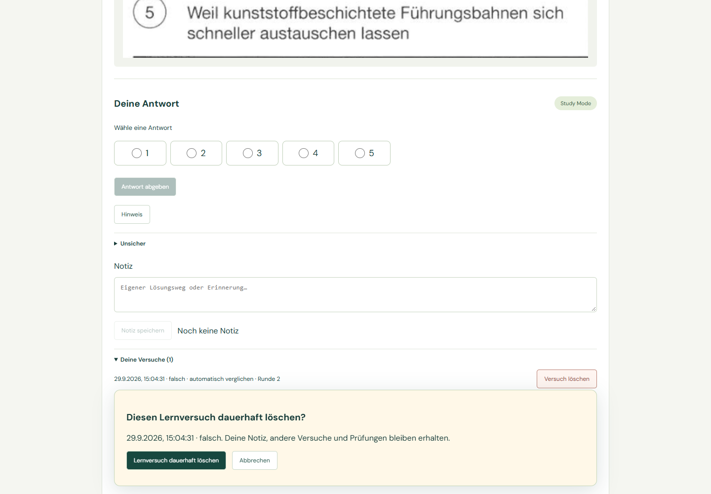
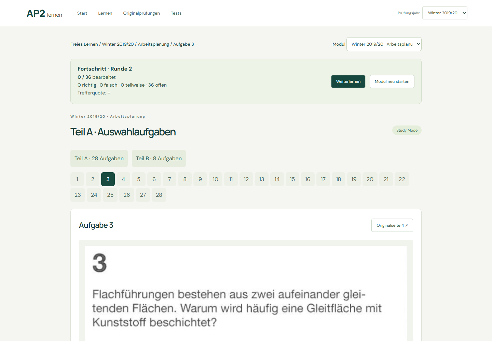
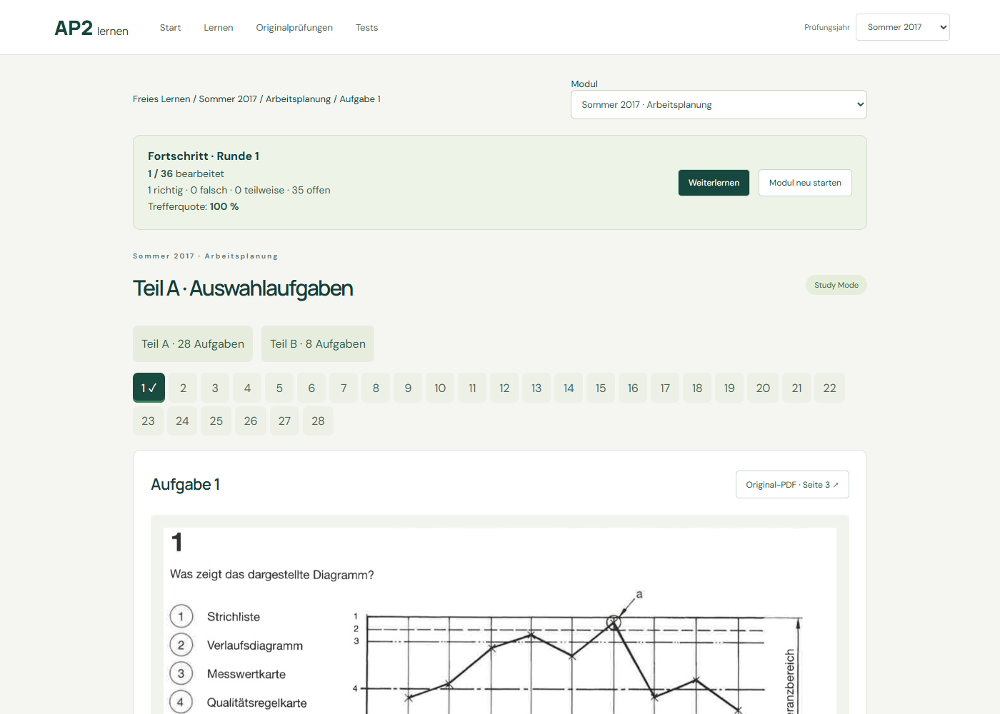
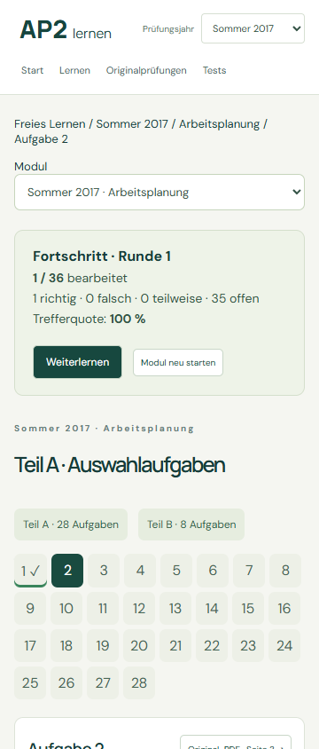

Notizen bleiben dauerhaft. Vergangene Versuche bleiben Geschichte. Die aktuelle Lernrunde hat einen eigenen Fortschritt.
Winter 2019/20 Arbeitsplanung ausprobieren · Dashboard
2/36 → 0/36; neue Runde, alte Markierungen entfernt. Alle Aufnahmen verwenden isolierte Testdaten.



Bestätigung erforderlich. Nur die gewählte freie Lernhistorie wird gelöscht. Rückfall nur innerhalb derselben Runde.




Originalprüfungen und Modultests ändern den freien Modulfortschritt nicht. Backup enthält Fortschritt, Runden und Notizen. Firebase bleibt nicht konfiguriert. Keine neuen Prüfungsjahre verarbeitet.